NAIL097
Effects and coeffects
Guest lecture
Tomáš Petříček, 309 (3rd floor)
petricek@d3s.mff.cuni.cz
https://tomasp.net | @tomaspetricek
https://d3s.mff.cuni.cz/people/tomaspetricek/

Where I'm coming from?
-
PhD, University of Cambridge
Types for context-aware programming -
Microsoft Research Cambridge
F# and applied functional programming -
The Alan Turing Institute, London
Expert and non-expert tools for data science -
University of Kent, Canterbury
Programming systems and history

What is my quest?
More programming language research in Prague!
Ask about reading group!
Do a PL project or thesis!
Join us for a PhD?
Side-effects
Monads and monad transformers
// Random number generators
let rnd = Random()
rnd.Next()
// Get the current time
System.DateTime.Now
// Throw an exception
raise "Something went wrong"
// Write to a file
File.WriteAllText(
"/tmp/test.txt", "Hello!")
// Use mutable state
let mutable counter = 0
counter <- counter + 1
Side-effects
Sooner or later, you need to do them!
Communicating with the outside (network, files, input/output)
Expressing things on the inside (threads, mutable state, non-determinism, exceptions)
Side effects
Different approaches
- Allow anywhere but use cautiously
- Implement and track using monads
- Allow but track using effect systems
- Implement and track sing effect handlers
Monads and monad transformers
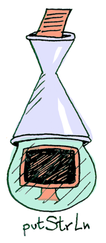Capture effect as monadic type
- Can fail:
a -> Maybe b - Uses state:
a -> State b - Interactive:
a -> IO b
Issues with monads
- They cannot be easily combined!
- Neither:
a -> State (Maybe b) - Nor:
a -> Maybe (State b)

Monad transformers
Wrap another monad to produce a new one
Works but not great...
Only some combinations
Not an automatic process
Code becomes ugly
Effect systems
Effects and effect handlers
Effects and effect handlers

Effect systems (1980s-90s)
- Information about effects in types
- Memory, networking, IO
- Mostly theoretical papers
Effect handlers (2010s-20s)
- New implementation method
- Better tracking in the type system
- Effekt, Eff, Koka, Haskell, OCaml, Scala, ...
Demo
Eff programming language
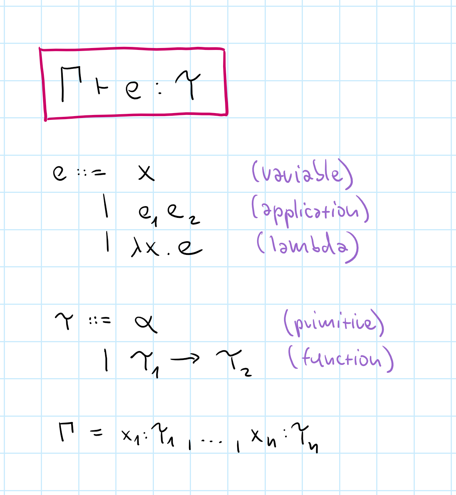
Type systems
Given a variable context \(\Gamma\), an expression \(e\) has a type \(\tau\).
Explain idea in a simple \(\lambda\)-calculus language
Ignore practical aspects like type inference!

Type system
Derivation rule for each expression
Expression has a type if there is a derivation
Does not specify
type inference!
Sample typing derivation
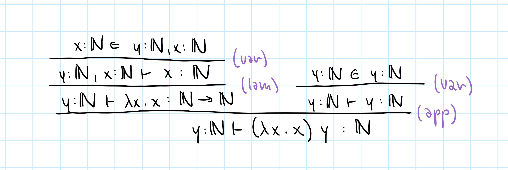
They are quite tedious to write by hand!
Effect systems
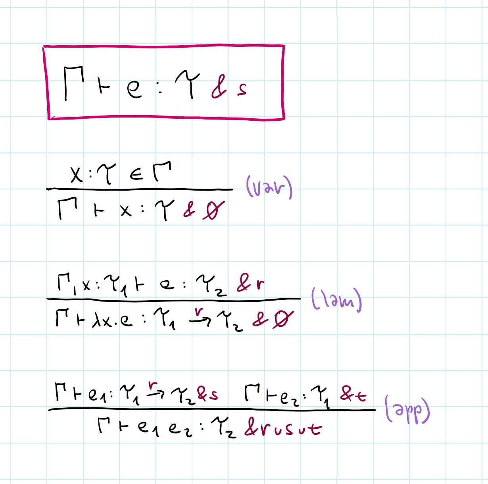
Effect systems
Adds effect annotations
Added to expression and function type
Var access & lambda creation are pure
Application unions
all effects
Demo
Type system of Eff
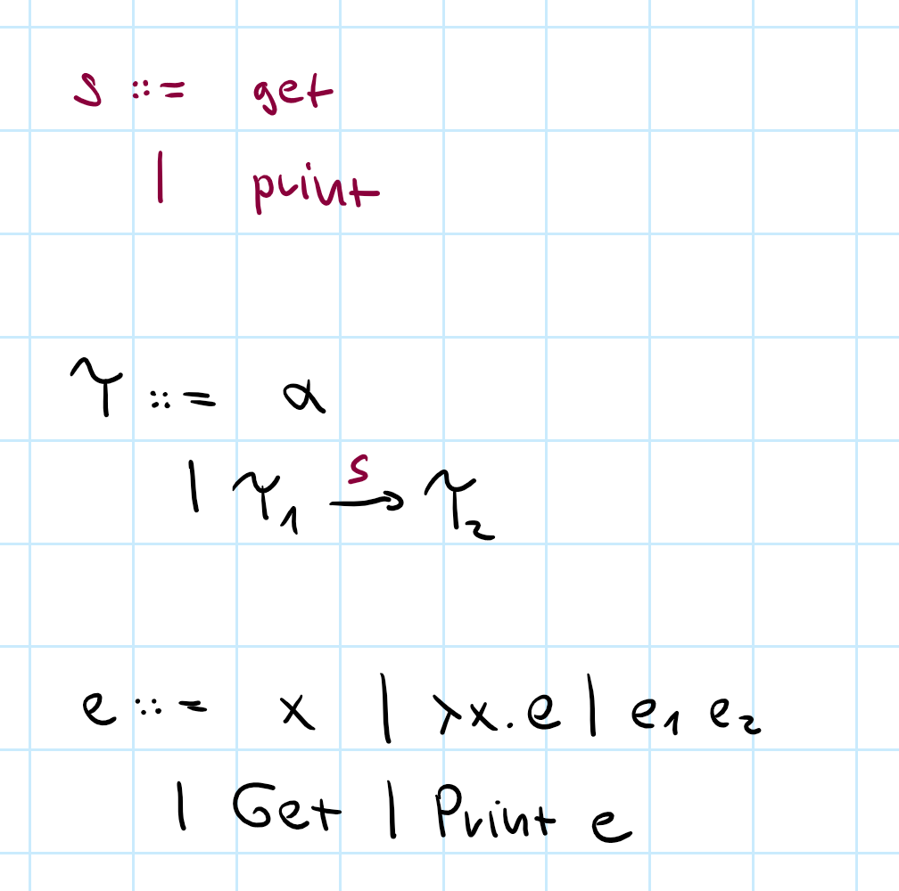
Language with effects
Effect handlers can be defined and handled like exceptions
Here just print and get
Types of Get and Print introduce get and print
Typing effectful expression

Effect annotations combined using union!
Effects
Interesting and tricky aspects
- More fine-grained than monads!
- Polymorphism is hard to get right
- Complicates all higher-order functions
- Generalizing to other structures than unions
Monads and effects
How are they related?
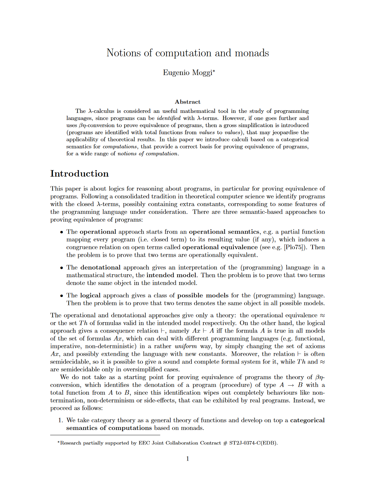
Monads and effects
(Moggi, 1991)
Monads can be used to model the semantics of side-effects
Two tiny languages
One with built-in effects
One with effects as feature
Monads and category theory
Programming language semantics
- Formally define what programs mean
- Explain subtle language features
- Reason about programs
Category theory
- Lots of algebraic structures for use!
- Composition is a central concept
- For compositional (functional) programs too!
Category = objects + arrows
A category \(\mathcal{C}\) consists of objects \(obj(\mathcal{C})\) and arrows \(arr(\mathcal{C})\) between objects, i.e. \(f : A \rightarrow B\) where \(A, B \in obj(\mathcal{C})\) with:
-
Arrow composition
Given \(f : A \rightarrow B, g : B \rightarrow C\), there is \(f\circ g:A \rightarrow C\). -
Associativity
Given \(f, g, h\), it holds that \((f\circ g)\circ h = f\circ (g\circ h)\) -
Identity arrow for all \(B\)
\(id_B : B \rightarrow B\) such that \(id_B \circ f = f\) and \(g \circ id_B = g\)
Interesting categories
Mathematical structures
- Sets with functions between them
- Numbers with less/greater than
- Vector, topological spaces etc.
Programming structures
- Types with functions between them (more or less)
- Classes with subtyping relationship
- Version control with parent relationships (maybe)
Types = objects, functions = arrows
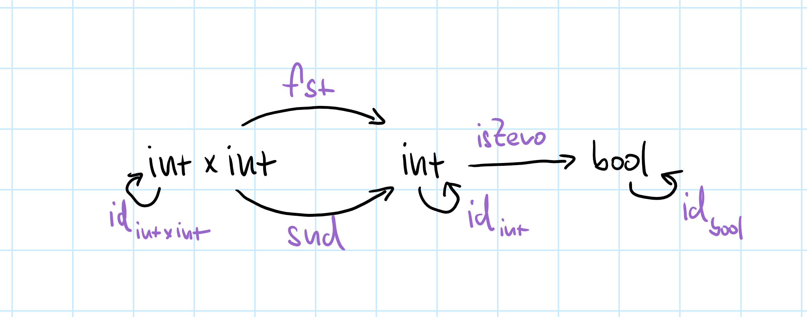
Arrow composition is function composition!
Haskell's isZero.fst becomes \(\textit{fst}\,\circ\textit{isZero}\)
Categorical semantics
What is the meaning of a+b?
\(\qquad a\!:\!int,b\!:\!int \;\vdash\, a+b\!:\!int\)
Arrow or morphism between two objects:
\(\qquad int\times int\rightarrow int\)
Yes, you can read this as a function too...
Categorical semantics
What is the meaning of \(e\)?
\(\qquad v_1\!:\!\tau_1,\ldots,v_n\!:\!\tau_n\vdash e : \tau\)
Arrow or morphism between two objects:
\(\qquad \tau_1\times\ldots\times\tau_n \rightarrow \tau\)
Maps (categorical) product of inputs to output

Categorical semantics
Basics map nicely
Variable access is
identity, composition
is composition
But more is needed
Cartesian Closed Categories
Categorical semantics
But what if there are side-effects?
\(\qquad v_1\!:\!\tau_1,\ldots,v_n\!:\!\tau_n\vdash e : \tau \htmlStyle{color:#8A003B;}{ \,\&\, s}\)
The result is wrapped with a monad \(\htmlStyle{color:#8A003B;}{M}\)!
\(\qquad \tau_1\times\ldots\times\tau_n \rightarrow \htmlStyle{color:#8A003B;}{M}\,\tau\)
"Monad is just a monoid in the category of endofunctors. What is the problem?"
Definition of a monad
Given a category \(\mathcal{C}\), a monad is a functor \(\htmlStyle{color:#8A003B;}{M} : \mathcal{C} \rightarrow \mathcal{C}\)
together with mappings (or natural transformations):
\(\eta_\tau : \tau \rightarrow \htmlStyle{color:#8A003B;}{M}(\tau)\)
-
\((-)^*\) which turns an arrow \(f : \tau_1 \rightarrow \htmlStyle{color:#8A003B;}{M}(\tau_2)\)
into an arrow \(f^* : \htmlStyle{color:#8A003B;}{M}(\tau_1) \rightarrow \htmlStyle{color:#8A003B;}{M}(\tau_2)\)
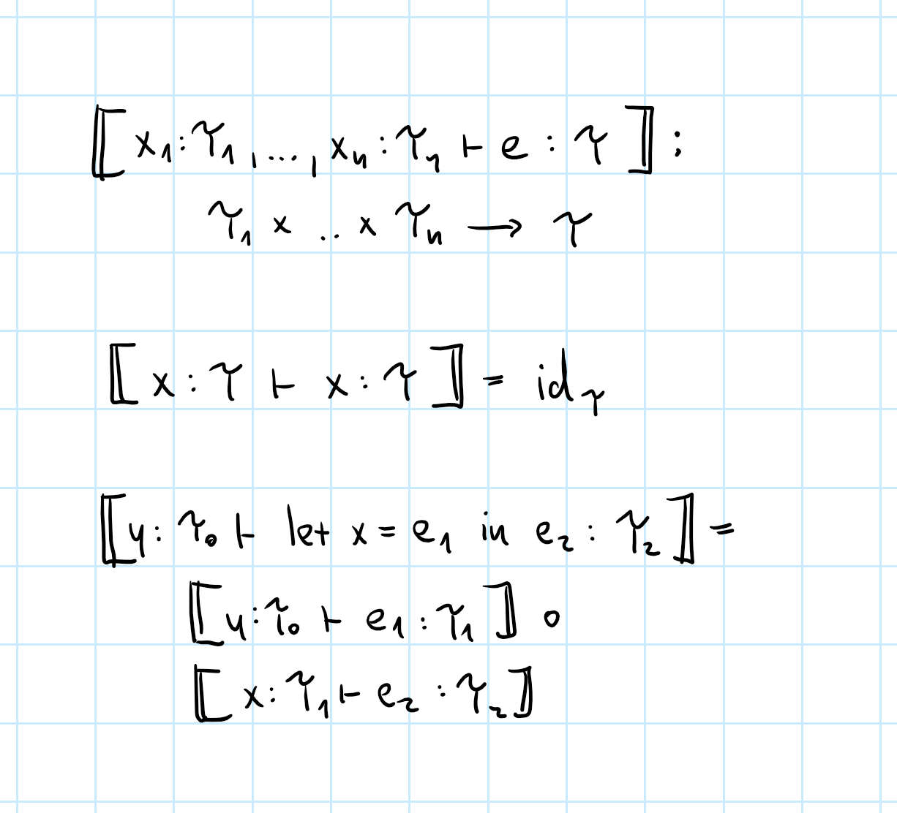
Monadic semantics
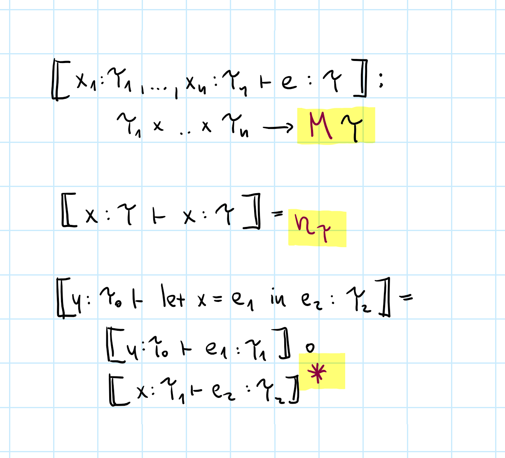
Monadic semantics
Monad (functor) wraps the output type
Unit and bind is what we need to compose!
Graded monads
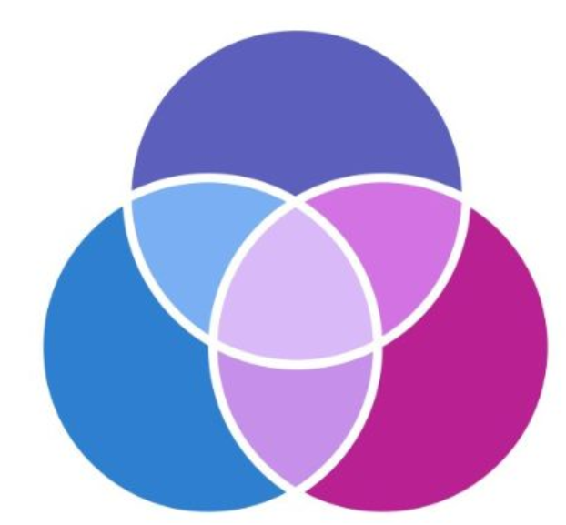What about effect annotations?
- We had effects \(r, s, t\) but just a monad \(M \tau\)!
- Annotate the monad structure as \(M^r \tau\)
- Monad composition composes annotations
Graded monads for effects
- Unit \(\eta_\tau : \tau \rightarrow M^0(\tau)\)
- Bind \((-)^* : (\tau_1 \rightarrow M^r(\tau_2)) \rightarrow (M^s(\tau_1) \rightarrow M^{s\oplus r}(\tau_2))\)
- List of length \(n\) with \(*\)
- State with lattice of access rights
Semantics with graded monads

Comonads and coeffects
The dual of effects is?
Context-dependent computations

Programming problems
- Different compilation targets
- Systems with different resources
- Neighbourhood in simulations
Actual examples of coeffects
- Tracking of resources (implicit parameters)
- History in data flow languages
- Variable liveness (used or not)
// Reading global state
System.DateTime.Now
// Data-flow computations
(x + prev x) / 2
// Implicit parameters
let foo() = ?x + 1
let ?x = 1 in foo()
// Game of life
let this = (* am I alive *)
let nbr = (* # of neighbours *)
(this && (nbr = 2 || nbr = 3))
|| (not this && nbr = 3)
Context-awareness
Reader monad is product comonad
a -> M b
a -> (s -> b)
a * s -> b
C a -> b
Other context-related problems
Definition of a monad (again)
Given a category \(\mathcal{C}\), a monad is a functor \(\htmlStyle{color:#8A003B;}{M} : \mathcal{C} \rightarrow \mathcal{C}\)
together with mappings (or natural transformations):
\(\eta_\tau : \tau \rightarrow \htmlStyle{color:#8A003B;}{M}(\tau)\)
-
\((-)^*\) which turns an arrow \(f : \tau_1 \rightarrow \htmlStyle{color:#8A003B;}{M}(\tau_2)\)
into an arrow \(f^* : \htmlStyle{color:#8A003B;}{M}(\tau_1) \rightarrow \htmlStyle{color:#8A003B;}{M}(\tau_2)\)
Definition of a monad
Given a category \(\mathcal{C}\), a comonad is a functor \(\htmlStyle{color:#8A003B;}{C} : \mathcal{C} \rightarrow \mathcal{C}\)
together with mappings (or natural transformations):
\(\mu_\tau : \htmlStyle{color:#8A003B;}{C}(\tau) \rightarrow \tau\)
-
\((-)^*\) which turns an arrow \(f : \htmlStyle{color:#8A003B;}{C}(\tau_1) \rightarrow \tau_2\)
into an arrow \(f^* : \htmlStyle{color:#8A003B;}{C}(\tau_1) \rightarrow \htmlStyle{color:#8A003B;}{C}(\tau_2)\)
Demo
Stencil computations
Monadic semantics

Comonadic semantics
Monad (functor) wraps the input type
Variable context handling becomes tricky!
Coeffects and graded comonads
-
Fewer good examples of comonads
Non-empty list, product (reader), stencils -
Graded comonad capture more than comonads
Maybe works, because \(\textnormal{Maybe}^{\textnormal{hasValue}} \tau \rightarrow \tau\) -
Needs extra stuff because of variables!
\(C(\tau_0)\times C(\tau_1 \times \ldots \times \tau_n) \rightarrow C(\tau_0 \times \ldots \times \tau_n)\) -
Composition + merging and splitting of contexts
Composition \(\otimes\) with context merging \(\oplus\) and splitting \(\vee\)
Effect systems
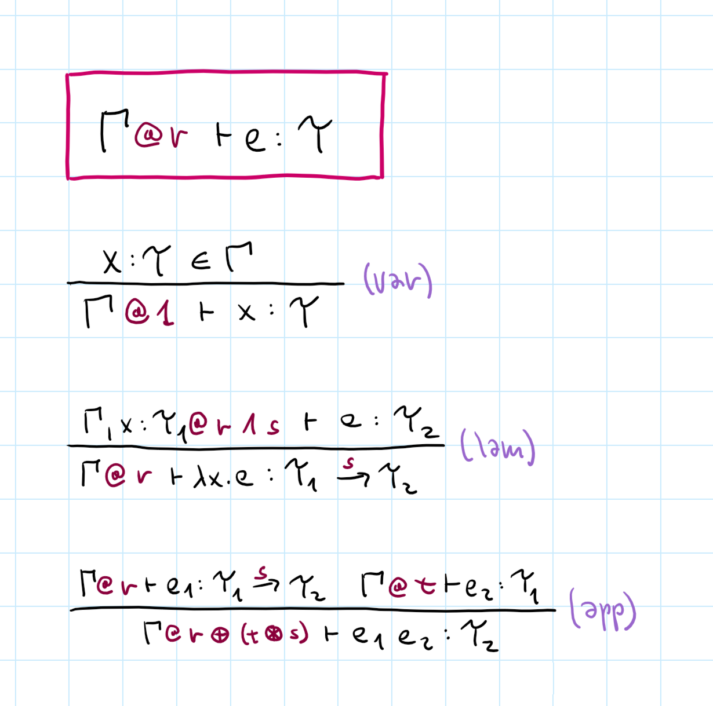
Coeffect systems
Adds coeffect annotations
Variable access is pure
Lambda combines available contexts
Application becomes
a bit tricky!
Demo
Derivations in coeffect playground
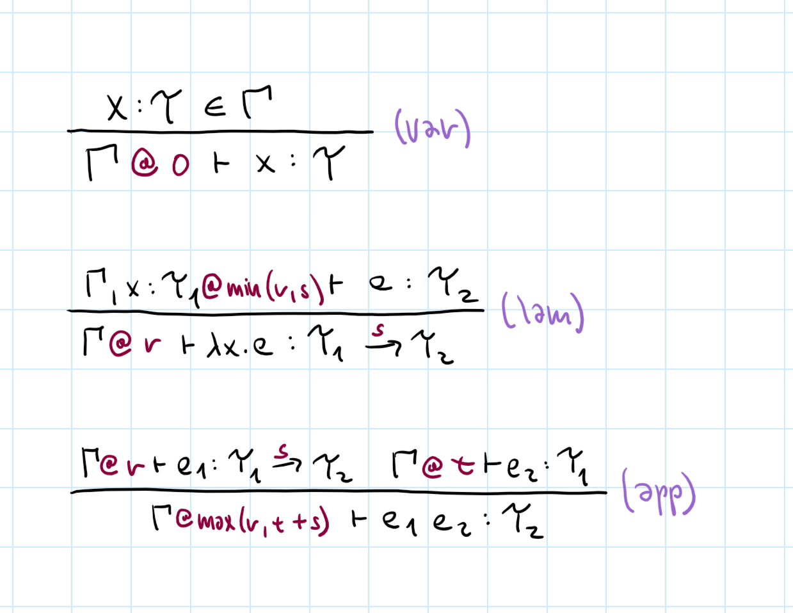
Dataflow coeffects
Two extra operations
Composition (multipication)
Split context into two (requires max)
Merge two contexts (requires min)
Effects and coeffects
Conclusions
Excuse to talk about
-
Programming language design
Design based on existing codebase is funny! -
Algebraic data types
Nice and powerful modelling tool -
Dependent type system concepts
Weird in TypeScript, but interesting! -
Some practical TypeScript tricks
Lets you do lots of useful things...
Project, thesis or PhD on programming?
Languages and applications with effects, coeffects & capabilities
Semantics of interactive programming systems
Types for data science scripting in Python or R
Conclusions
Effects and Coeffects
-
Effects can be modelled as monads
But you need grading and more structures -
Coeffects to track context-dependence
Dual to effects, but need different extras! -
Coeffects can be modelled as comonads
But you need grading for interesting cases
Tomáš Petříček, 309 (3rd floor)
petricek@d3s.mff.cuni.cz
https://tomasp.net | @tomaspetricek
https://d3s.mff.cuni.cz/teaching/nprg077
References